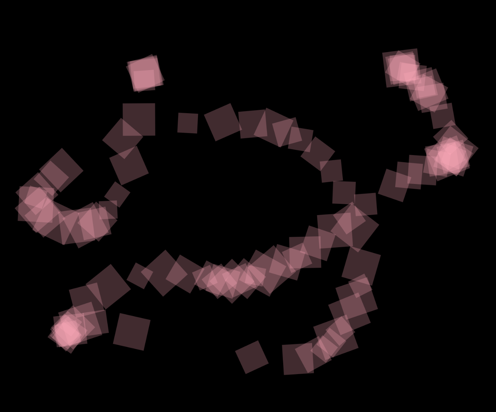
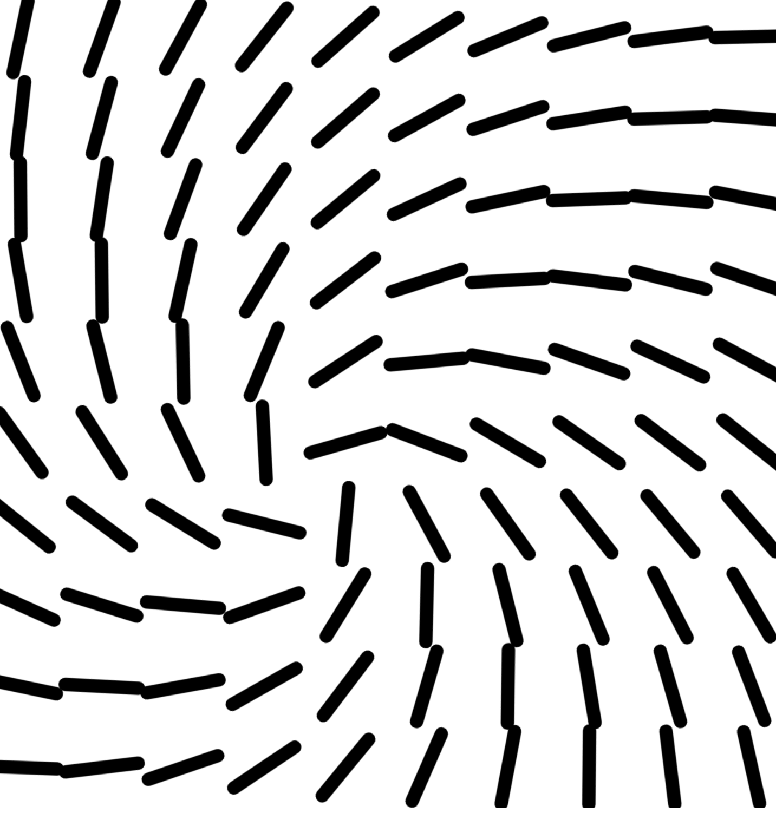
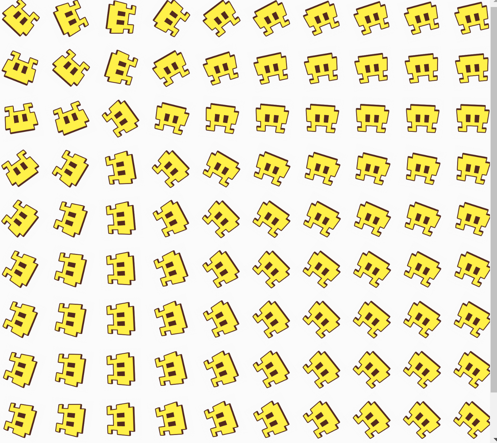
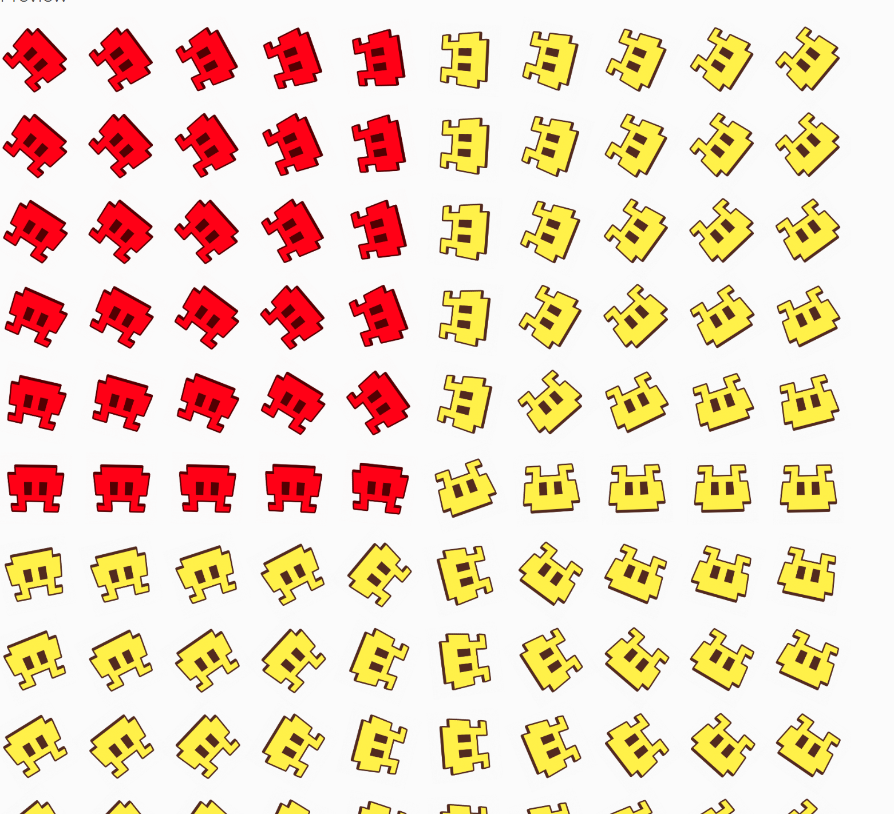
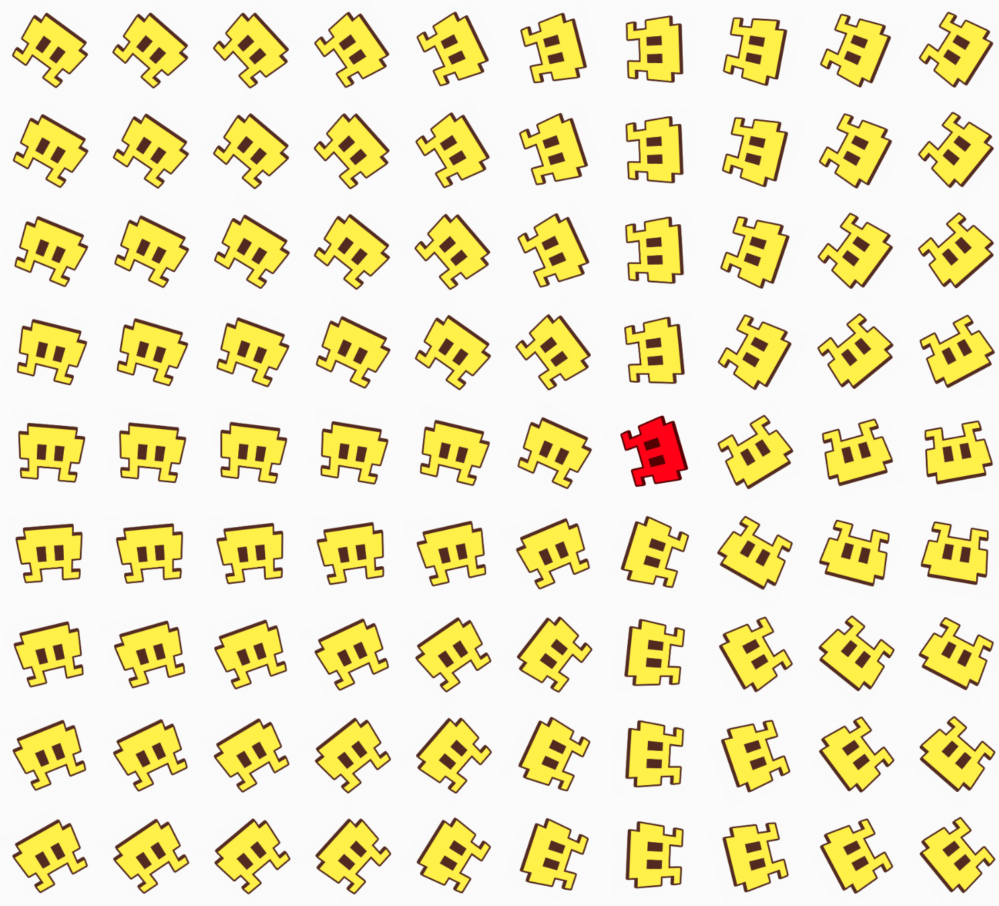
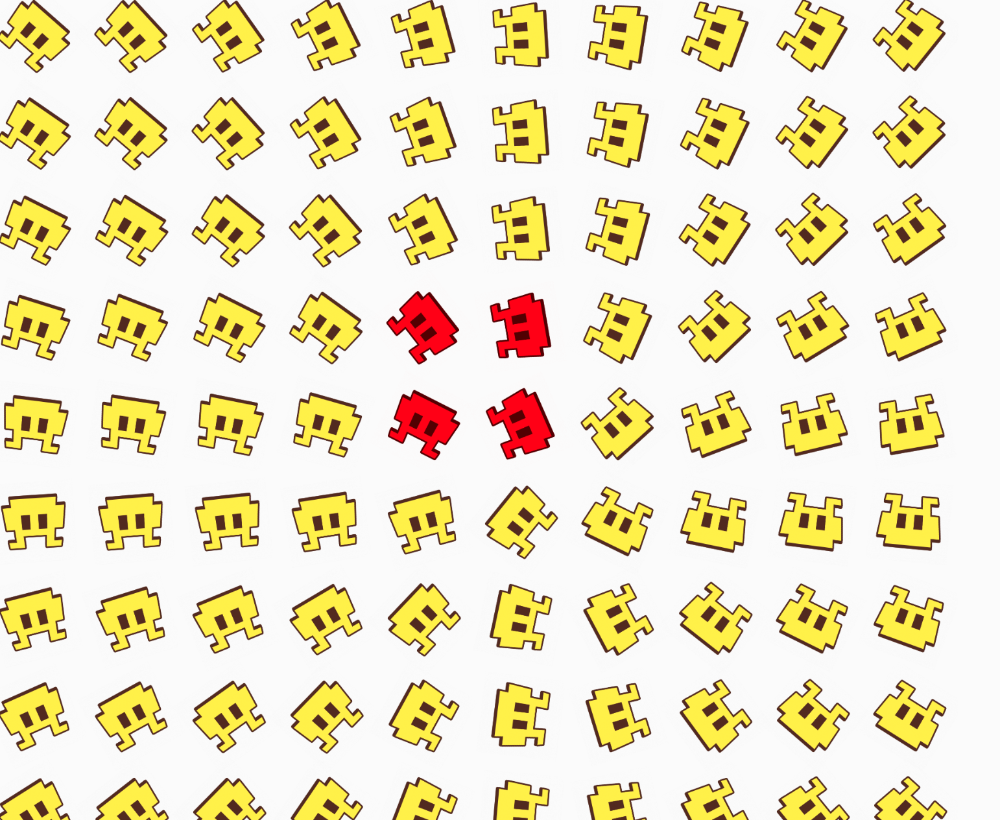
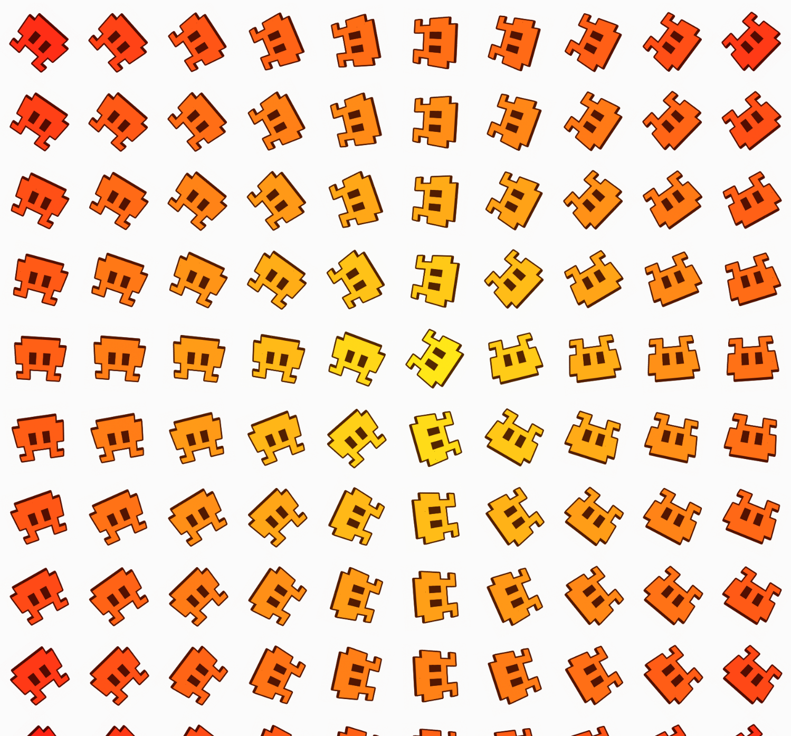

Experiment 3 - Generative Art
Imitate
Immediately after scrolling through Open processing I was drawn to this code of a tessellation of cats. The chalk brush style was super appealing so I decided to start from there. Luckily for me, they had also linked a chalk demo they made to test out the texture of the brush, so I was also able to experiment and study that code as well.

An initial set back I’m noticing is that they seem to have some kind of image mask over the brush. Because w/out the image existing it looks more like .
Going to try my own stock image of chalk to replicate that effect as closely as I can.
Idea: maybe instead of tessellation take the cat bezier curves and turn it into an L system? or something else repeatable
Update: okay looking at the code, holy moly that is a lot. If I’m being honest, I didn’t even try to digest it.
At a glance he had made a cat class that looked like it was building the curves to create each individual cat.
Given my personal time restraints, I have decided to go a different route. Still interested in image masking.
I used a random png from my computer, and it turns out I was right before, that's all I needed to do!
Now that I have this interesting texture, let’s see what I can do with it.
Integrate
After a bit of scrolling through the Generative Design code, I saw a cool piece that responds to mouse movement, and can change the shape and size of its objects.
So I copied that code and sent in my test image that I was using previously to mask the brush.
Innovate
Now that I’ve integrated the replacing image and that other set of generative code, it’s time to start tweaking some values. So far it looks pretty cool with the sample image I’m using. I liked the way it rotated, but I want to add another level for what the mouse position could change about the image. Currently by just moving the mouse you rotate the surrounding images. And if you press G and D keys it will change the total number of tiles, or the scaling of images around the mouse. A cool aspect I think I can add is tinting the surrounding colors, so it sort of makes a gradient. Where red is the color closest to the mouse and it fades out from there.
By tracking the posX and posY of the space, I was able to tint the color to change. But it was changing all the colors, forming a box from the top corner.
After messing around with what positions are being called in the if statement I made, it’s now only tinting one tile at a time, based on the mouse position. Next step is adjusting the colors around it to keep changing row by row. I’m going to try to do this maybe by expanding the tile height and tile width distances.
By doing 2*tileHeight and tileWidth I am able to cover more tiles! However, the origin of where it starts is coming from the bottom left corner, which is not ideal.

woohoo! Through some assistance from ChatGPT I was able to create this repeating fade out effect that would follow the mouse position.
The way I did it was instead of tracking specifically that the item is in the range of
``` mouseX
I am instead calculating the distance between the points
And making sure that the origin is in the center of the nth tile size.
So it’s just multiplying the tileSize and halving it. Kind of like how you would find the center of a circle.
If it is not within that range, it’ll get rid of the tint.
Reflection
Each person that worked on the code should reflect on the process, the difficulties, and the successes of the experiment. Here's where you can put your reflections.
- What part of the project you contributed
- A reflection on your work and the work of the team
- Brief highs and lows
I added the changing color features and substituted the image from the original code.
My work was okay! I think the end result came out rather well.
Highs: getting the color fade!
Lows: getting the inital color to be on only surrounding icons.
Results
* MOUSE
* position x/y : position to face
* click : change color // Athena's addition
*
* KEYS
* arrow up/down : scale of shapes
* arrow left/right : additional rotation of shapes
* d : toggle size depending on distance
* g : toggle grid resolution